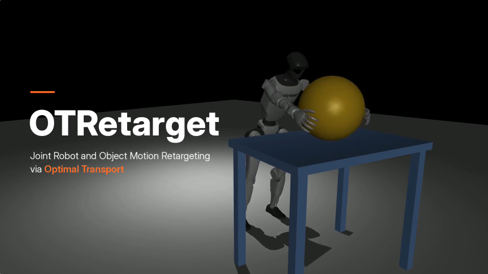

Erwann Carn
Engineering student at ENPC · Research intern at Inria (Willow team)
I am an engineering student at École nationale des ponts et chaussées (ENPC). I am currently a research intern in the Willow team (Inria Paris / ENS), supervised by Justin Carpentier. Before ENPC, I spent two years in preparatory classes (MPSI, then PSI*) at Lycée Clemenceau in Nantes.
I work on imitation learning and motion retargeting for robotics. My interest is in what survives the transfer from a human body to a robot one: not joint angles, but interactions, which surfaces touch, where, and how.
- GitHub
- erwann (dot) carn [at] inria (dot) fr
News
- 2026/09 Our paper [OTRetarget: Joint Robot and Object Motion Retargeting via Optimal Transport] is out on arXiv!
- 2026/06 Started my research internship in the Willow team (Inria Paris) with Justin Carpentier.
Publications
Education
- École nationale des ponts et chaussées (ENPC), Engineering degree (MSc level) [2024-2027]
- Preparatory classes MPSI / PSI*, Lycée Clemenceau, Nantes [2022-2024]